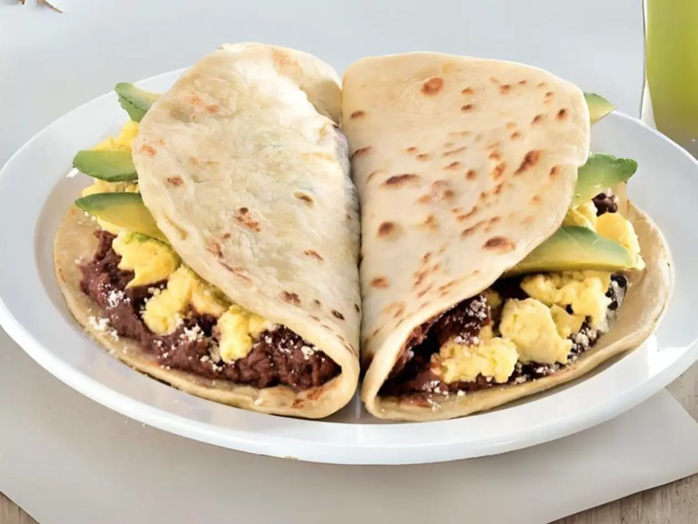
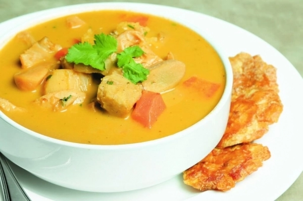
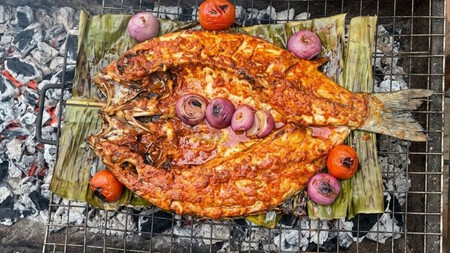
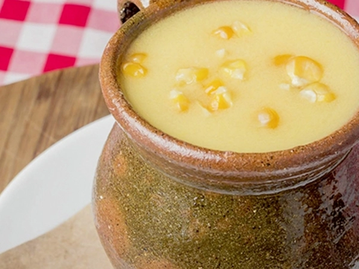
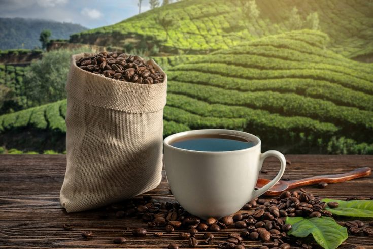

Uno de los alimentos más representativos de Honduras. Consiste en una tortilla de harina de trigo doblada y generalmente rellena con frijoles, queso y mantequilla o crema. Existen numerosas variantes con ingredientes adicionales.
Descrubre Honduras: Historia, Naturaleza y Cultura 5 Estrellas
La historia de Honduras está estrechamente vinculada con la historia de Centroamérica. Antes de la llegada de los europeos, el territorio estaba habitado por diversos pueblos indígenas, entre ellos los mayas, lencas, tolupanes y otros grupos que desarrollaron sus propias formas de organización, cultura y conocimiento. La presencia maya alcanzó una de sus expresiones más importantes en Copán, uno de los principales centros culturales de la antigua civilización maya.
Durante el período colonial, el territorio hondureño formó parte del dominio español. En esta época se desarrollaron importantes centros urbanos y actividades económicas relacionadas con la minería, la agricultura y el comercio. También se produjo un profundo proceso de transformación cultural que dio origen a parte de la identidad mestiza que caracteriza actualmente al país.
El proceso de independencia centroamericana comenzó a tomar forma a principios del siglo XIX y culminó el 15 de septiembre de 1821, cuando las provincias de Centroamérica declararon su independencia de España. Entre las figuras intelectuales que participaron en este proceso destacó José Cecilio del Valle, hondureño que tuvo un papel importante en la redacción del Acta de Independencia de Centroamérica y que defendió ideas relacionadas con la organización política de la región.
Después de la independencia surgió un nuevo desafío: definir el futuro político de las antiguas provincias centroamericanas. En 1823 se establecieron las Provincias Unidas del Centro de América, posteriormente organizadas como la República Federal de Centroamérica. Fue en este contexto donde adquirió especial importancia la figura de Francisco Morazán.
Nacido en Tegucigalpa en 1792, Francisco Morazán fue militar, político y uno de los principales defensores de la unidad centroamericana. Durante su trayectoria llegó a ocupar la presidencia de la República Federal de Centroamérica y encabezó esfuerzos para mantener unida la federación frente a los conflictos políticos y los intereses que favorecían la separación de los distintos Estados.
El pensamiento de Morazán estaba basado en la idea de que los pueblos centroamericanos compartían una historia, territorio e intereses comunes que podían fortalecerse mediante una nación centroamericana unida. Su proyecto también estuvo acompañado por ideas de modernización, educación, separación entre Iglesia y Estado y fortalecimiento de las instituciones republicanas.
Otros personajes hondureños, como Dionisio de Herrera, José Trinidad Cabañas y José Trinidad Reyes, también desempeñaron papeles importantes en la construcción política, educativa y cultural de Honduras durante el siglo XIX. Herrera fue una figura fundamental en los primeros años de la organización política del país; Cabañas compartió con Morazán su defensa del proyecto federal centroamericano; y Reyes realizó importantes aportes al desarrollo educativo y cultural de Honduras.
La visión unionista de Morazán finalmente no logró consolidar una Centroamérica políticamente unificada. La Federación Centroamericana se disolvió en 1838 y los diferentes Estados siguieron caminos independientes. Morazán continuó defendiendo sus ideales hasta su ejecución en San José de Costa Rica en 1842.
A pesar de su muerte, el pensamiento de Francisco Morazán permaneció como uno de los principales símbolos históricos de Honduras y de la identidad centroamericana. Su figura representa el ideal de una región integrada y el esfuerzo por construir sociedades basadas en la educación, las instituciones republicanas y la unidad.
Los Lencas constituyen uno de los principales pueblos indígenas de Honduras y tienen una fuerte presencia en los departamentos del occidente y centro del país, especialmente en zonas de Intibucá, Lempira, La Paz y Santa Bárbara. Su cultura se encuentra estrechamente relacionada con la agricultura, las tradiciones comunitarias y la elaboración de artesanías. La alfarería es una de sus expresiones culturales más reconocidas, junto con diversas celebraciones y prácticas tradicionales que han sido transmitidas de generación en generación. Los pueblos y comunidades lencas representan una parte importante del patrimonio cultural hondureño y de la diversidad que caracteriza al país.
El pueblo Garífuna posee una cultura afroindígena que se desarrolló en el Caribe y que llegó a las costas de Honduras a finales del siglo XVIII. Actualmente sus comunidades se encuentran principalmente a lo largo de la costa caribeña hondureña. Su identidad cultural se expresa mediante la música, la danza, la lengua, la gastronomía y una fuerte tradición comunitaria. Entre sus manifestaciones más conocidas se encuentra la punta, una expresión musical y dancística que se ha convertido en uno de los símbolos de la cultura caribeña hondureña. La cultura garífuna es además reconocida internacionalmente por su importancia como patrimonio cultural inmaterial.
El pueblo Misquito habita principalmente en la región de La Mosquitia, en el departamento de Gracias a Dios, una de las zonas naturales más extensas y menos urbanizadas de Honduras. Su cultura mantiene una estrecha relación con los ríos, los bosques y el mar Caribe, elementos fundamentales para su forma tradicional de vida. La pesca, la agricultura y el aprovechamiento de los recursos naturales forman parte importante de sus actividades. Su lengua y sus conocimientos tradicionales sobre el entorno natural constituyen elementos fundamentales de su identidad cultural y contribuyen a la diversidad étnica de Honduras.
El pueblo Tolupán, también conocido históricamente como Xicaque, se encuentra principalmente en comunidades de los departamentos de Yoro y Francisco Morazán. Sus comunidades han conservado diferentes aspectos de sus tradiciones, formas de organización y conocimientos relacionados con el entorno natural. Históricamente han mantenido una estrecha relación con los bosques y los recursos de las regiones montañosas donde habitan. La preservación de su cultura y de sus territorios constituye una parte importante del patrimonio indígena de Honduras.
El pueblo Chortí tiene una presencia histórica especialmente importante en el occidente de Honduras, principalmente en los departamentos de Copán y Ocotepeque, además de comunidades en Guatemala. Los Chortís forman parte del ámbito cultural maya y mantienen una relación histórica con la región donde se encuentra el sitio arqueológico de Copán. Su identidad se expresa mediante sus tradiciones, agricultura, organización comunitaria, artesanías y conocimientos ancestrales. La presencia chortí permite establecer un vínculo entre el patrimonio indígena contemporáneo de Honduras y la herencia de las antiguas culturas mesoamericanas.

Uno de los alimentos más representativos de Honduras. Consiste en una tortilla de harina de trigo doblada y generalmente rellena con frijoles, queso y mantequilla o crema. Existen numerosas variantes con ingredientes adicionales.

Plato tradicional de la costa caribeña hondureña. Generalmente se prepara con caracol y leche de coco, acompañados por diferentes vegetales y condimentos. Está especialmente asociada con la gastronomía de la costa norte y la cultura caribeña hondureña.

Preparación de tradición caribeña y relacionada con la gastronomía de las comunidades garífunas. Consiste en pescado preparado con una combinación de condimentos y cocción tradicional, acompañado habitualmente de ingredientes propios de la cocina caribeña.

Bebida tradicional preparada principalmente a base de maíz tierno, leche o agua, azúcar y especias. Es una preparación asociada con las tradiciones culinarias de diferentes regiones de Honduras.

Honduras es reconocido internacionalmente por la producción de café de especialidad. Los cafés cultivados en zonas de altura presentan características particulares relacionadas con el clima, suelo y altitud.